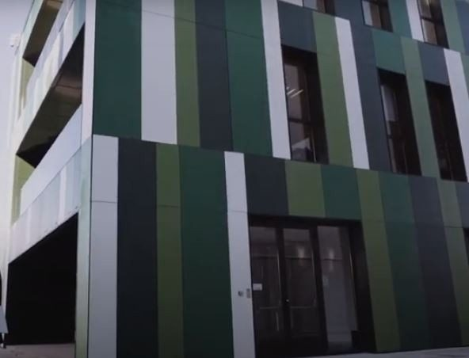

TFG / TFM
Ejemplos de TFM y TFG desarrollados en colaboración con IKERLAN.
Haz tu TFG o TFM en un entorno tecnológico
Tanto en Ikerlan como en Uniovi te ofrecemos la posibilidad de realizar trabajos fin de grado y fin de máster en un entorno tecnológico. En el caso de que escojas hacer tu TFG/TFM en Ikerlan, ambas opciones están remuneradas.
En el caso de que escojas realizarlo en Uniovi, ponte en contacto con los profesores encargados de la Cátedra Ikerlan para que te informen de los proyectos que serán becados. Nuestra intención es que los mejores estudiantes de cada promoción obtengan una beca y puedan disfrutar de la experiencia de ir más allá en su aprendizaje y quieran vivir experiencias reales con las tecnologías y laboratorios más punteros.

Ejemplos de propuestas de TFG/TFM en cursos anteriores con beca de 400 €/mes.
- Desarrollo de una APP para la asistencia en el cálculo de vida a fatiga y el análisis modal operacional
- Desarrollo de un programa para la interpretación de resultados en tiempo real en ensayos de crecimiento de grieta por fatiga
- ProFatigue 2.0: Mejora y actualización de software para el ajuste del campo S-N
- Estudio de metodologías para el cálculo de vida a fatiga en el dominio de la frecuencia
- Estudio de técnicas de optimización aplicadas al diseño de elementos estructurales o mecánicos mediante simulación numérica
- Metodología para la readaptación de modelos numéricos mediante técnicas de optimización
- Estudio numérico-experimental de la influencia de sobrecargas en el crecimiento de grietas por fatiga
- Estimación de tensiones en estructuras sometidas a cargas dinámicas
- Cálculo numérico de una pasarela peatonal
- Fabricación, validación y puesta en servicio de un sistema para la asistencia en la calibración de equipos de correlación digital de imágenes
- Influencia de la frecuencia de ensayo en la caracterización de vida a fatiga
- Influencia de la tensión media en la caracterización de la vida a fatiga del acero estructural S275 y en la acumulación de daño a fatiga
- Estudio del impacto de las condiciones de mecanizado en la caracterización de vida a fatiga
- Estudio experimental del crecimiento de grieta por fatiga del acero S275
- Integridad estructural en componentes de fabricación aditiva
- Banco de ensayos de fatiga para el sector eólico
- Diseño mecatrónico para la instalación de equipos de grandes dimensiones
- Estimación de desgaste en juntas por efecto de fricción y holguras mediante simulación dinámica de sistemas multicuerpo
- Monitorización de la condición de instalaciones de ascensor
- Monitorización de rodamientos pitch de un aerogenerador
- Structural Health Monitoring: stress estimation and monitoring
- Diseño de un driver inteligente para semiconductores MOSFET de SiC
- Sistemas de comunicación Ethernet para aplicaciones industriales de control con requisitos real-time
- Extensión inalámbrica para soluciones de control industrial con requisitos tiempo real
- Extensión inalámbrica tiempo real para control con requisitos de bajo consumo
- Estudio de plataformas SDR para aplicaciones C-V2X basadas en LTE
- Emulador de canal inalámbrico RF sobre plataformas de alto rendimiento MPSoC de Xilinx
- Integración de modem WiFi tiempo real sobre plataformas System-on-Chip basadas en Linux